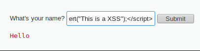
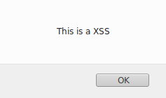

Reflected XSS (Non-Persistent or Type 2)
Reflected attacks happen when an input field(with a malicious payload) carried inside of a HTTP request(sent by the browser of the victim to the vulnerable website) gets reflected in the victim output page.
The attack can be triggered when a user click on the modified link
example:http://example.com/search.php?find=<payload>
in this example we have embedded the payload in the find GET parameter
1. Normal Behaviour
2. Test Input
note our input, in an encoded fashion, in the address bar:
?name=%3Cscript%3Ealert%28%22This+is+a+XSS%22%29%3B%3C%2Fscript%3E#  Built-in XSS filter
Some browsers
for the security of the user have built-in reflected XSS filter
Anyway the reality is that they can filter only known XSS attacks. Advanced attacks can bypass XSS filter of the browser
Anti-XSS filters of a browser can not block
persistent XSS